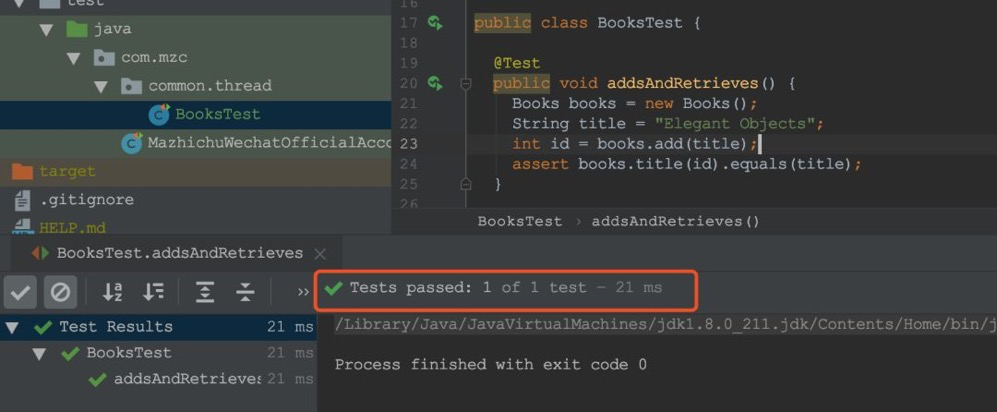
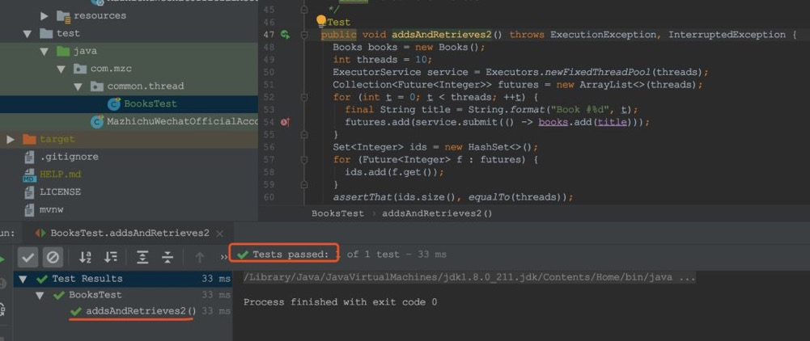
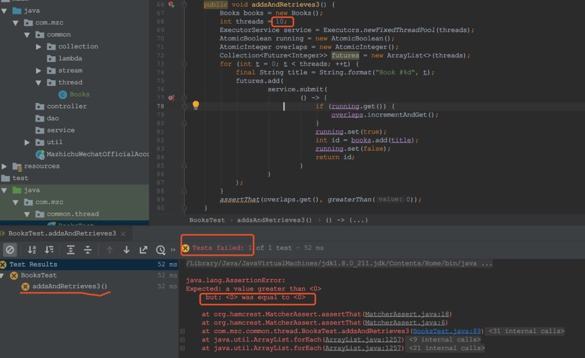
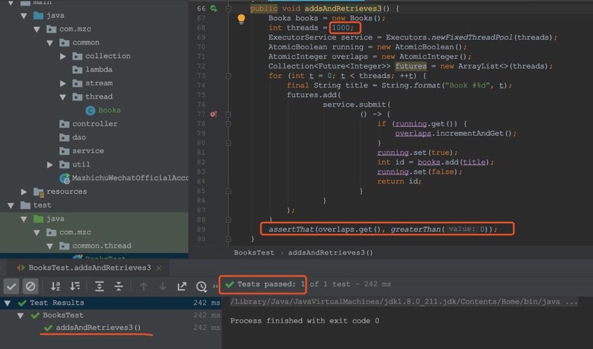
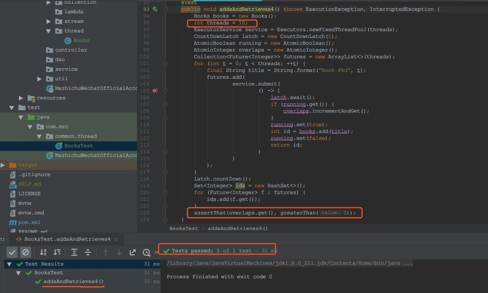

原文连接:https://www.cnblogs.com/mazhichu/p/12018337.html
线程安全性是Java等语言/平台中类的一个重要标准，在Java中，我们经常在线程之间共享对象。由于缺乏线程安全性而导致的问题很难调试，因为它们是偶发的，而且几乎不可能有目的地重现。如何测试对象以确保它们是线程安全的？
假如有一个内存书架
package com.mzc.common.thread;
import java.util.Map;
import java.util.concurrent.ConcurrentHashMap;
/**
* <p class="detail">
* 功能: 内存书架
* </p>
*
* @author Moore
* @ClassName Books.
* @Version V1.0.
* @date 2019.12.10 14:00:13
*/
public class Books {
final Map<Integer, String> map = new ConcurrentHashMap<>();
/**
* <p class="detail">
* 功能: 存书，并返回书的id
* </p>
*
* @param title :
* @return int
* @author Moore
* @date 2019.12.10 14:00:16
*/
int add(String title) {
final Integer next = this.map.size() + 1;
this.map.put(next, title);
return next;
}
/**
* <p class="detail">
* 功能: 根据书的id读取书名
* </p>
*
* @param id :
* @return string
* @author Moore
* @date 2019.12.10 14:00:16
*/
String title(int id) {
return this.map.get(id);
}
}
首先，我们把一本书放进书架，书架会返回它的ID。然后，我们可以通过它的ID来读取书名，像这样:
Books books = new Books();
String title = "Elegant Objects";
int id = books.add(title);
assert books.title(id).equals(title);
这个类似乎是线程安全的，因为我们使用的是线程安全的ConcurrentHashMap，而不是更原始和非线程安全的HashMap，对吧？我们先来测试一下：
public class BooksTest {
@Test
public void addsAndRetrieves() {
Books books = new Books();
String title = "Elegant Objects";
int id = books.add(title);
assert books.title(id).equals(title);
}
}
查看测试结果：

测试通过了，但这只是一个单线程测试。让我们尝试从几个并行线程中进行相同的操作（我使用的是Hamcrest）：
/**
* <p class="detail">
* 功能: 多线程测试
* </p>
*
* @throws ExecutionException the execution exception
* @throws InterruptedException the interrupted exception
* @author Moore
* @date 2019.12.10 14:16:34
*/
@Test
public void addsAndRetrieves2() throws ExecutionException, InterruptedException {
Books books = new Books();
int threads = 10;
ExecutorService service = Executors.newFixedThreadPool(threads);
Collection<Future<Integer>> futures = new ArrayList<>(threads);
for (int t = 0; t < threads; ++t) {
final String title = String.format("Book #%d", t);
futures.add(service.submit(() -> books.add(title)));
}
Set<Integer> ids = new HashSet<>();
for (Future<Integer> f : futures) {
ids.add(f.get());
}
assertThat(ids.size(), equalTo(threads));
}
首先，我通过执行程序创建线程池。然后，我通过Submit（）提交10个Callable类型的对象。他们每个都会在书架上添加一本唯一的新书。所有这些将由池中的10个线程中的某些线程以某种不可预测的顺序执行。
然后，我通过Future类型的对象列表获取其执行者的结果。最后，我计算创建的唯一图书ID的数量。如果数字为10，则没有冲突。我使用Set集合来确保ID列表仅包含唯一元素。
我们看一下这样改造后的运行结果：

测试也通过了，但是，它不够强壮。这里的问题是它并没有真正从多个并行线程测试这些书。在两次调用commit（）之间经过的时间足够长，可以完成books.add（）的执行。这就是为什么实际上只有一个线程可以同时运行的原因。
我们可以通过修改一些代码再来检查它：
@Test
public void addsAndRetrieves3() {
Books books = new Books();
int threads = 10;
ExecutorService service = Executors.newFixedThreadPool(threads);
AtomicBoolean running = new AtomicBoolean();
AtomicInteger overlaps = new AtomicInteger();
Collection<Future<Integer>> futures = new ArrayList<>(threads);
for (int t = 0; t < threads; ++t) {
final String title = String.format("Book #%d", t);
futures.add(
service.submit(
() -> {
if (running.get()) {
overlaps.incrementAndGet();
}
running.set(true);
int id = books.add(title);
running.set(false);
return id;
}
)
);
}
assertThat(overlaps.get(), greaterThan(0));
}
看一下测试结果：


执行错误，说明插入的书和返回的id数量是不冲突的。
通过上面的代码，我试图了解线程之间的重叠频率以及并行执行的频率。但是基本上概率为0，所以这个测试还没有真正测到我想测的，还不是我们想要的，它只是把十本书一本一本地加到书架上。
再来：

可以看到，如果我把线程数增加到1000，它们会开始重叠或者并行运行。
但是我希望即使线程数只有10个的时候，也会出现重叠并行的情况。怎么办呢？为了解决这个问题，我使用CountDownLatch：
@Test
public void addsAndRetrieves4() throws ExecutionException, InterruptedException {
Books books = new Books();
int threads = 10;
ExecutorService service = Executors.newFixedThreadPool(threads);
CountDownLatch latch = new CountDownLatch(1);
AtomicBoolean running = new AtomicBoolean();
AtomicInteger overlaps = new AtomicInteger();
Collection<Future<Integer>> futures = new ArrayList<>(threads);
for (int t = 0; t < threads; ++t) {
final String title = String.format("Book #%d", t);
futures.add(
service.submit(
() -> {
latch.await();
if (running.get()) {
overlaps.incrementAndGet();
}
running.set(true);
int id = books.add(title);
running.set(false);
return id;
}
)
);
}
latch.countDown();
Set<Integer> ids = new HashSet<>();
for (Future<Integer> f : futures) {
ids.add(f.get());
}
assertThat(overlaps.get(), greaterThan(0));
}现在，每个线程在接触书本之前都要等待锁权限。当我们通过Submit（）提交所有内容时，它们将保留并等待。然后，我们用countDown（）释放锁，它们才同时开始运行。
查看运行结果：

通过运行结果可以知道，现在线程数还是为10，但是线程的重叠数是大于0的，所以assertTrue执行通过，ids也不等于10了，也就是没有像以前那样得到10个图书ID。显然，Books类不是线程安全的！
在修复优化该类之前，教大家一个简化测试的方法，使用来自Cactoos的RunInThreads，它与我们上面所做的完全一样，但代码是这样的：
@Test
public void addsAndRetrieves5() {
Books books = new Books();
MatcherAssert.assertThat(
t -> {
String title = String.format(
"Book #%d", t.getAndIncrement()
);
int id = books.add(title);
return books.title(id).equals(title);
},
new RunsInThreads<>(new AtomicInteger(), 10)
);
}assertThat（）的第一个参数是Func（一个函数接口）的实例，接受AtomicInteger（RunsThreads的第一个参数）并返回布尔值。此函数将在10个并行线程上执行，使用与上述相同的基于锁的方法。
这个RunInThreads看起来非常紧凑，用起来也很方便，推荐给大家，可以用起来的。只需要在你的项目中添加一个依赖：
<dependency>
<groupId>org.llorllale</groupId>
<artifactId>cactoos-matchers</artifactId>
<version>0.18</version>
</dependency>
最后，为了使Books类成为线程安全的，我们只需要向其方法add（）中同步添加就可以了。或者，聪明的码小伙伴们，你们有更好的方案吗？欢迎留言，大家一起讨论。
文章同步公众号：码之初，每天推送Java技术文章，期待您的关注！
原创不易，转载请注明出处，谢谢！